Формування архіву
Архів, який буде відправлятися на портал, має містити Excel-файл (шаблон), а поруч із ним — усі папки із зображеннями товарів.
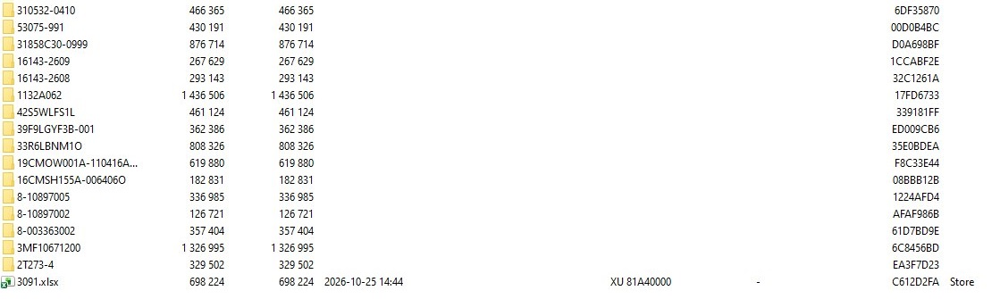
Другий архів має бути з обкладинками. Тут є два варіанти:
Початок роботи
На головній сторінці є кнопка + Додати контент. Після натискання на неї відкривається меню, де можна додати архів. Сюди завантажуємо архів зі скріна 1.
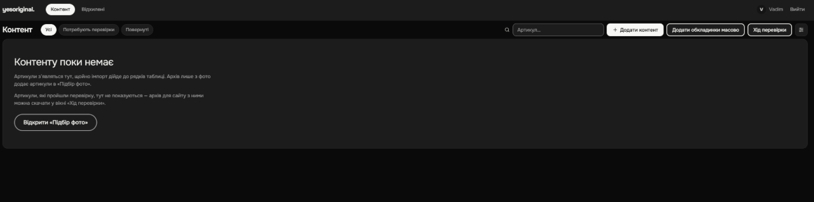
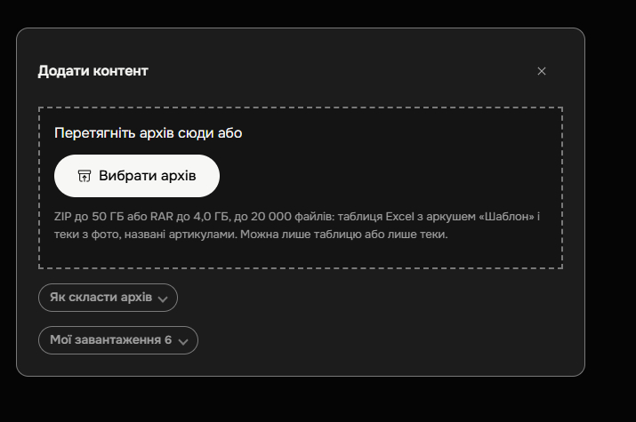
Вікно прогресу завантаження архіву на портал. Зазвичай завантаження триває близько 10 хвилин.
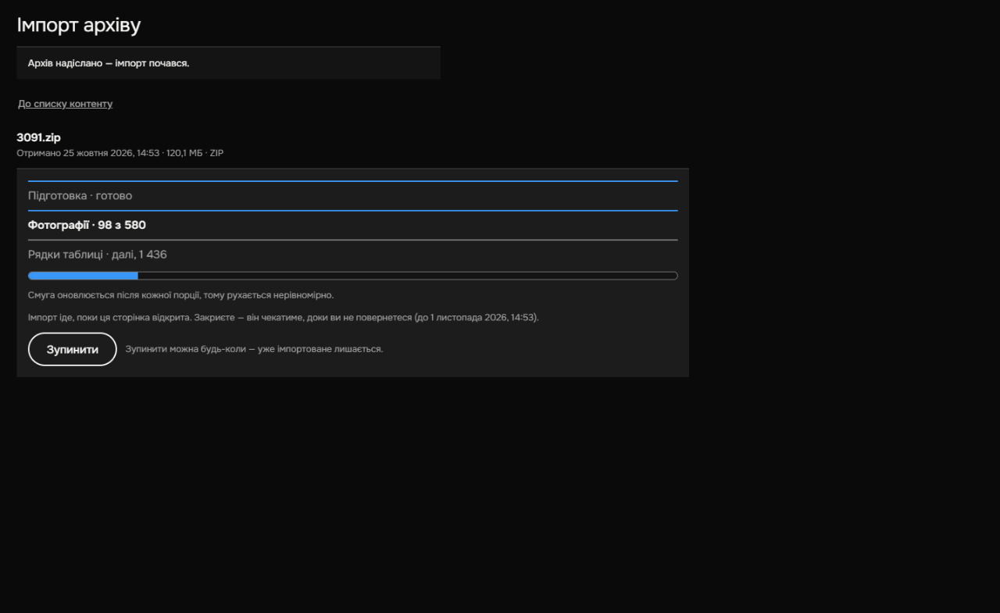
Після завантаження з'явиться приблизно таке вікно з інформацією про обробку. Вона нам не потрібна — натискаємо Перейти до контенту.
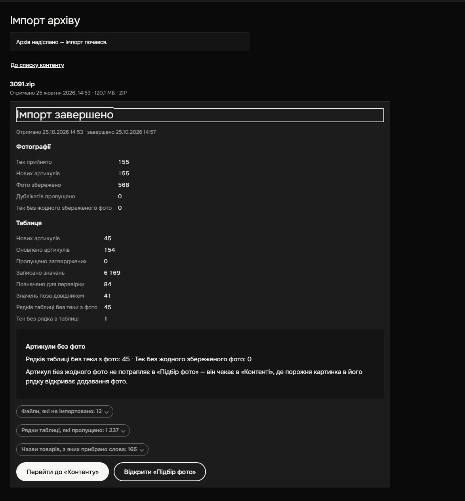
Обробка шаблону
Вікно обробки шаблону.
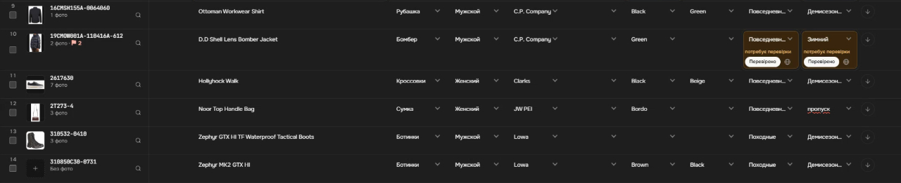
У колонці «Поставщик» вказуємо причину, чому товар не оброблено (1, 2, 3, 4, 5, 6), — так само, як це було в шаблоні.
З назви, як завжди, прибираємо все зайве (бренд, стать, колір, тип тощо).
У всіх інших полях значення можна обирати з випадаючого списку. Для швидкого пошуку потрібного значення можна ввести його частину — портал підтягне запропоновані варіанти. Також додано варіант «Пропустити». За потреби можна вписати значення, якого немає у списку.
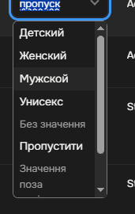
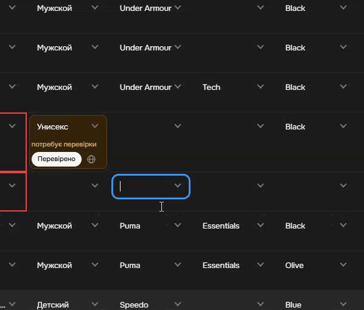
Значення, які Аїшка не заповнила, будуть позначені червоною рамкою — їх потрібно внести вручну.
Значення, в яких Аїшка не впевнена, будуть виділені, як на скріні 8. Їх потрібно перевірити й обов'язково натиснути Перевірено.
Важливо: без позначки «Перевірено» система не пропустить цей товар.
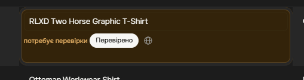
Біля кожного товару є кнопка, яка відкриває додатковий опис товару. Там також є поле, в якому можна вказати комплектність товару.
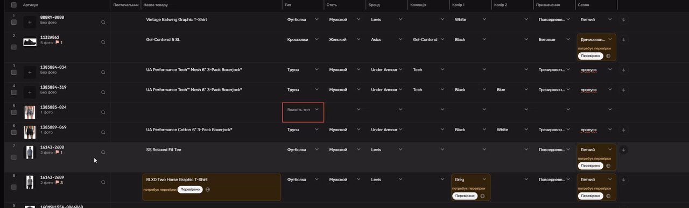
Якщо навести курсор на зображення, воно збільшується, щоб його можна було роздивитися (зручно для уточнення кольору). А якщо натиснути на зображення, відкриється меню вибору зображень.
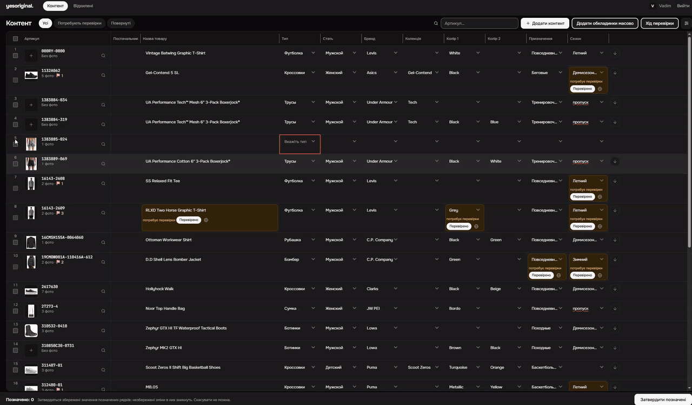
Для кожного товару потрібно вибрати додаткові фото, як показано на відео 4. Тут також можна змінити обкладинку.
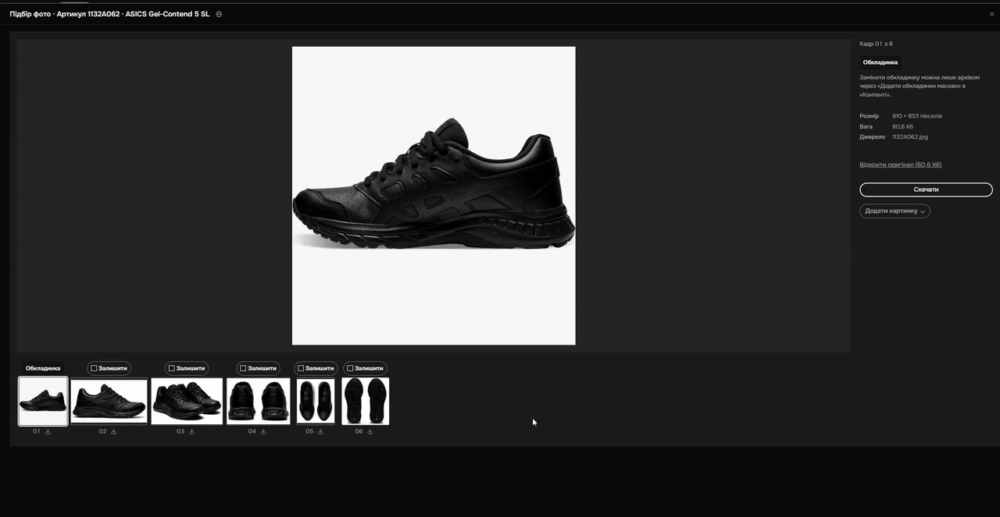
Якщо натиснути на зображення, відкриється меню для швидкого редагування фото.
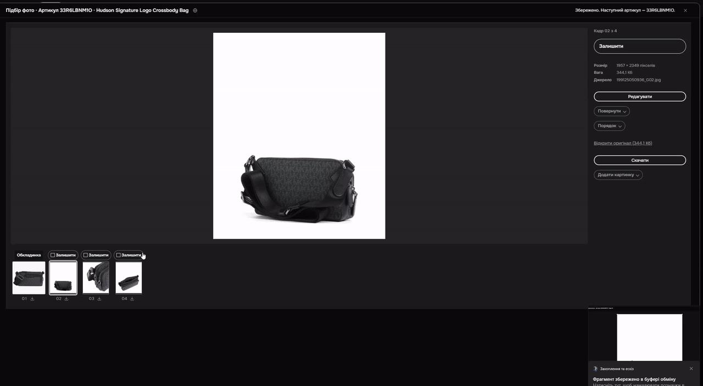
Тут також можна завантажити фото собі на комп'ютер, а ще є швидкий перехід до товару в інтернеті (іконка браузера).
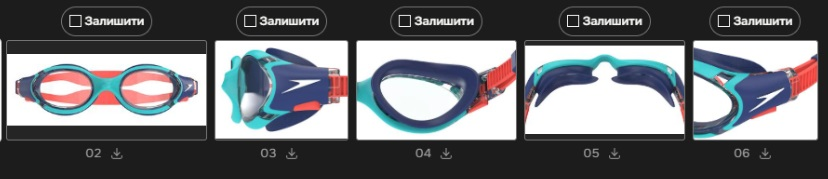
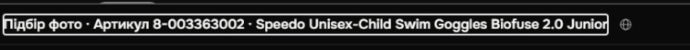
Для зручності додано можливість сортування шаблону — зручно, наприклад, щоб знайти порожні значення.
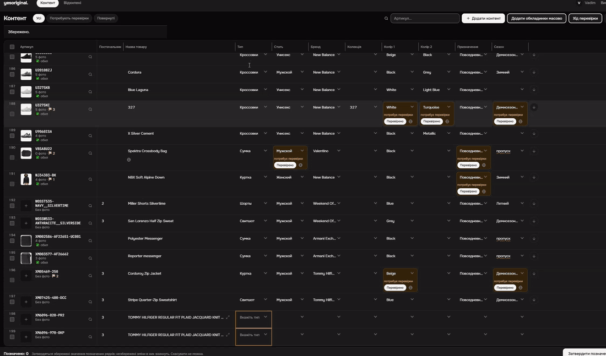
На скріні 11 є кілька елементів:
- якщо натиснути на артикул, він автоматично копіюється;
- прапорці, які показують, чи вибрано додаткові фото і чи вибрано обкладинку;
- лупа — після натискання відкриваються пошукові системи Google і DuckDuckGo.
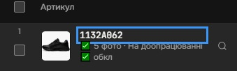
Як масово додати обкладинки для всіх товарів. Для цього потрібно завантажити архів з обкладинками.
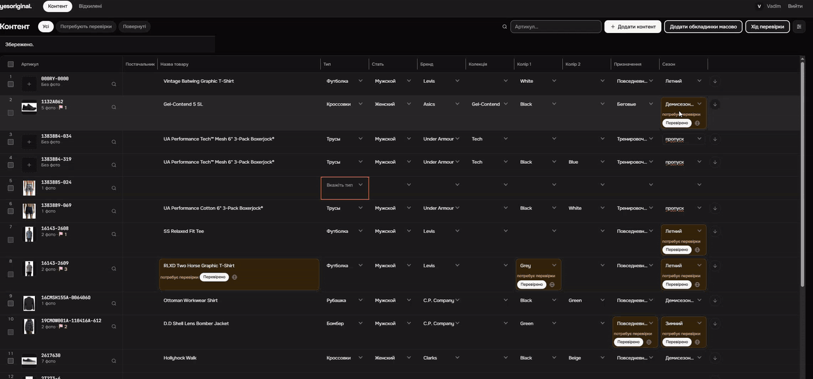
Коли весь шаблон перевірено, виділяємо всі товари галочками і натискаємо кнопку Затвердити, як на відео 8. Це означає, що шаблон відправлено на перевірку. Після цього натискаємо кнопку Хід перевірки і чекаємо, поки Аїшка все перевірить.
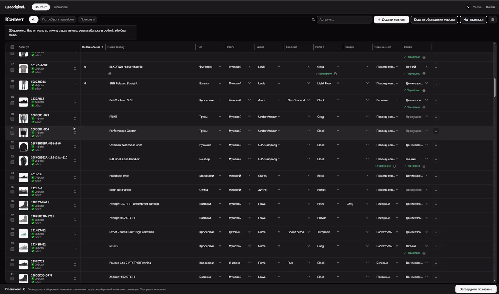
Помилки
Після того як Аїшка перевірить товари, результат буде у вкладці Повернуті.
Кожен товар з помилками матиме короткий опис. Виправляємо помилки, знову виділяємо все і натискаємо кнопку Затвердити.
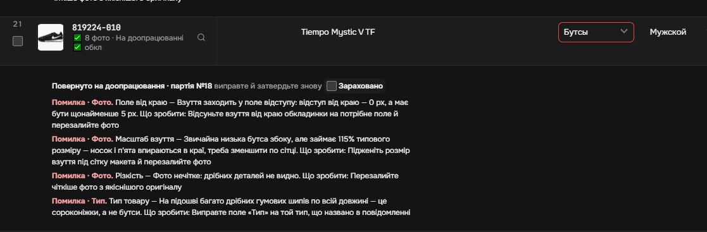
Аїшка занадто прискіплива до фотографій, тому додано кнопку Зараховано. Натискаємо її, якщо з обкладинкою все добре; якщо ж ні — переробляємо.
Коли всі помилки виправлено, натискаємо кнопку Хід перевірки — там є кнопка, яка завантажує архів.
Не забудьте: перейменуйте архів відповідно до номера картки в Odoo і надішліть його в Telegram.